Indicações da Han
Esse guia que você adicionou ao carrinho é o companheiro de prateleira do produto principal Pele de Cristal.
O livro principal te ensina os rituais com ingredientes da sua cozinha — mel, limão, iogurte, óleo de coco, chá verde, abacate. Aqui você vai conhecer o outro lado: os produtos prontos de farmácia e de marca coreana que valem cada centavo, com o preço médio e o jeito certo de usar.
Eu cansei de ver mulher gastando R$ 200 num clareador que não faz nada e ignorando uma vaselina de R$ 8 que faria diferença real no problema dela, com paciência.
São 4 partes:
Pra cada produto, você tem:
Não compre tudo. A ideia aqui é o oposto de "lista de desejos". Você lê, identifica seu problema (mancha, ruga, oleosidade, caspa, queda, olheira, axila escura), vai direto no produto ou protocolo que resolve, e usa de 30 a 60 dias com disciplina. Só depois, se quiser, compra outro.
Comprar 10 produtos ao mesmo tempo é o caminho mais rápido pra ficar com a pele irritada, sem saber o que funcionou e o que não funcionou.
O mercado de beleza coreana é o que mais sofre com falsificações no Brasil. Por isso eu deixo, abaixo de cada produto, um link de loja que eu já verifiquei — onde você compra o produto original, não uma falsificação. Esses links são as indicações da Han: lugares onde eu confio comprar.
Se preferir comprar por outro caminho, fique atenta a preços muito abaixo do normal e a vendedores sem selo de "oficial". É aí que a falsificação aparece.
Antes de você ir pra primeira página de produtos, leia essas 5 regras. Elas vão te poupar muito dinheiro e muita irritação na pele.
Independente do que diga o rótulo ou eu. Aplique uma pequena quantidade na parte interna do braço, espere 24 horas. Se aparecer vermelhidão, coceira ou ardência, não use aquele produto no rosto ou no couro cabeludo.
Quase todo produto com ácido (salicílico, glicólico, tranexâmico, retinal) deixa a pele muito mais sensível à luz do sol. Sem protetor solar diário FPS 30 ou maior, o efeito desses produtos se inverte e piora as manchas. É a regra de ouro.
Não comece com 5 ácidos diferentes no mesmo dia. Pegue UM, use 2-3 vezes na primeira semana, vai aumentando gradualmente. Combinar muitos ativos fortes ao mesmo tempo destrói a barreira da pele.
Pele madura é mais fina, com menos colágeno, mais propensa a irritação. Use sempre menos quantidade do que indica o rótulo, e menos frequência. Começar suave é sempre melhor.
Nenhum guia substitui consulta médica. Se você tem condição de pele específica (rosácea, eczema, melasma persistente, alopecia), passe primeiro no SUS ou no particular antes de comprar qualquer produto.
A indústria de cosméticos quer te vender bruma, stick, essência, água de beleza, água de transformação... É tanta coisa que você nem sabe por onde começar.
Mas a verdade é simples: pra ter pele saudável, você precisa de apenas três passos. Três. Só isso.
PASSO 1 — LIMPEZA: higienizar o rosto com um sabonete adequado pro seu tipo de pele.
PASSO 2 — HIDRATAÇÃO: obrigatório pra todos os tipos de pele — sim, pele oleosa também precisa.
PASSO 3 — PROTEÇÃO SOLAR: seu melhor aliado contra manchas e envelhecimento.
| Momento | O que fazer |
|---|---|
| Manhã | Limpeza + hidratante + filtro solar |
| Tarde | Reaplicar o filtro solar (não precisa passar mais nada) |
| Noite | Limpeza + hidratante |
Antes de comprar qualquer coisa, identifique o seu tipo de pele. Depois consulte a tabela:
| Tipo de pele | Limpeza | Hidratação | Protetor solar |
|---|---|---|---|
| Mista / Oleosa | Gel de limpeza com controle de oleosidade e ácidos | Gel hidratante leve — não deixa a pele oleosa | Filtro solar fluido ou matte |
| Normal / Seca | Gel suave com glicerina — limpa sem repuxar | Creme hidratante — textura mais rica | Filtro solar hidratante ou fluido |
| Sensível / Madura | Gel com muita glicerina e extrato calmante — limpa já hidratando | Creme calmante — recupera a barreira da pele | Filtro solar calmante ou com cor |
Oleosa: a pele brilha sobretudo na zona T (testa, nariz, queixo) ao longo do dia. Poros mais visíveis.
Mista: zona T oleosa, mas bochechas normais ou secas.
Normal: pele equilibrada, sem extremos.
Seca: sensação de repuxar, descamação, vermelhidão fácil.
Sensível: reage a quase tudo — vermelhidão, ardência, alergia frequente.
Madura (após menopausa): tende a ficar mais seca e fina, mesmo se antes era oleosa. Trata como pele seca/sensível.
Depois que você dominou a rotina básica (limpeza + hidratante + filtro solar) por algumas semanas, pode incluir um ácido à noite pra tratar queixas específicas. Cada ácido age de um jeito diferente — escolha de acordo com o que você quer melhorar na sua pele.
Ácidos são de NOITE — por isso o protetor solar de manhã passa a ser ainda mais obrigatório.
Comece com 1 vez por semana e aumente gradualmente conforme sua pele se acostuma.
O que é: derivado natural do salgueiro, hoje produzido sinteticamente em laboratório.
Pra quê serve: controlar oleosidade, reduzir a aparência de poros, secar espinhas e acne.
Ideal pra: pele oleosa, mista, com espinhas e poros dilatados.
O que é: faz parte da família dos retinoides — é o cosmético com a maior evidência científica pra estimular colágeno. Não é remédio, é cosmético.
Pra quê serve: estimular a produção de colágeno, melhorar linhas finas e ruguinhas, melhorar a textura e qualidade geral da pele.
Ideal pra: prevenção e tratamento de rugas e linhas de expressão. Mulher 50+ pode usar com cuidado.
O que é: um dos antioxidantes mais estudados em cosmética — impede o envelhecimento precoce (oxidação no corpo = envelhecimento).
Pra quê serve: dar luminosidade e viço à pele, clarear levemente manchas, potencializar o filtro solar (age junto, protegendo dos raios do sol).
Ideal pra: quem quer mais brilho e proteção extra contra manchas e envelhecimento.
O que é: composto sintético que parece um aminoácido (pedacinho de proteína).
Pra quê serve: tratar olheiras roxinhas (vasculares), tratar melasma vascular, clarear manchas específicas que dependem de vasinhos.
Ideal pra: olheiras escuras e melasma vascular (quando o médico confirma que é vascular).
O que é: a vitamina B3 — ativo multipropósito, um dos mais versáteis de todo o skincare.
Pra quê serve: clarear manchas, controlar oleosidade, melhorar linhas finas, reduzir aparência de poros, uniformizar o tom geral da pele.
Ideal pra: quem quer tratar várias queixas ao mesmo tempo com um único ativo. Excelente opção pra começar.
O que é: o ácido kójico foi originalmente extraído da água do arroz — o segredo de beleza das asiáticas e coreanas há séculos. O ácido lático é um esfoliante suave com propriedades clareadoras.
Pra quê serve: clarear manchas (de forma suave a moderada), acalmar peles sensíveis e com rosácea, estimular a renovação celular de forma gentil.
Ideal pra: peles sensíveis, sensibilizadas, com rosácea ou manchas leves.
| Sua queixa | Ácido indicado |
|---|---|
| Oleosidade, poros dilatados, espinhas | Ácido Salicílico |
| Linhas finas e ruguinhas | Retinol / Retinoide |
| Brilho, luminosidade, prevenção de manchas | Vitamina C |
| Olheiras roxas e melasma vascular | Ácido Tranexâmico |
| Várias queixas ao mesmo tempo | Niacinamida (B3) |
| Manchas em pele sensível ou rosácea | Ácido Kójico / Ácido Lático |
Pra começar uma rotina, você precisa limpar bem. Esses 3 sabonetes cobrem todos os tipos de pele 50+.
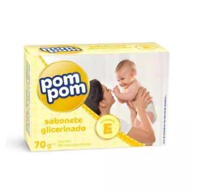
O que é: Sabonete glicerinado infantil — suave, sem irritantes, com pH compatível com a pele do rosto.
Pra quê serve: Limpeza facial gentil pra qualquer tipo de pele. Especialmente bom pra pele sensível, sensibilizada por ácidos, ou em recuperação depois de algum tratamento.
Como usar: Lave o rosto duas vezes ao dia normalmente — de manhã e antes de dormir.
Onde encontrar: Supermercado ou farmácia, na seção de bebê.
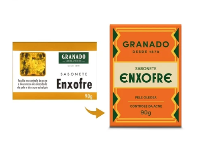
O que é: Sabonete medicado com enxofre. É tratamento, não só limpeza.
Pra quê serve: Foliculite (espinhas pequenas no corpo), rosácea, espinhas no rosto, dermatite seborreica, queratose pilar (aquelas "bolinhas" no braço que parecem pele de morango), caspa pesada. Tem ação antibacteriana, antifúngica e desobstrui o poro.
Como usar — no rosto: 3 vezes por semana (por exemplo segunda, quarta e sexta), à noite. Deixe agir por 2-3 minutos antes de enxaguar. Hidrate depois.
Como usar — no corpo (foliculite, queratose): Diariamente no banho, por 2-3 minutos na área afetada. Hidratar o corpo depois.
Cuidados: Sempre hidratar depois de usar. Não usar em pele aberta ou irritada. Se você tem pele muito sensível, comece com 1 vez por semana e veja como reage.
Onde encontrar: Farmácia, supermercado, Mercado Livre.
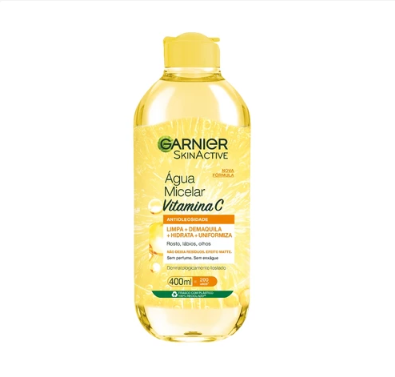
O que é: Água micelar com vitamina C. Remove maquiagem e trata o tom da pele ao mesmo tempo. Sem perfume.
Pra quê serve: Tira a maquiagem suavemente sem agredir. A vitamina C ajuda a uniformizar o tom. Ótima pra pele sensível.
Como usar: Aplique no algodão e passe sobre o rosto com toques suaves. Não precisa enxaguar. É a primeira etapa da limpeza dupla (depois você lava com sabonete).
Rendimento: Cerca de 6 meses de uso diário. Sai barata por mês.
Onde encontrar: Supermercado, farmácia, loja de cosméticos.
Hidratante bom não é caro. Esses 3 da farmácia brasileira competem com produtos importados de R$ 200.
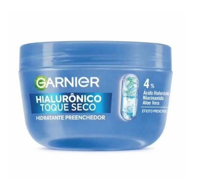
O que é: Hidratante facial com ácido hialurônico + aloe vera + niacinamida. Textura "toque seco", efeito de primer e blur logo na aplicação.
Pra quê serve: Hidrata profundamente sem deixar a pele melecada. O aloe vera dá uma sensação refrescante que acalma e ajuda a prevenir manchas e vermelhidão. A niacinamida clareia e uniformiza o tom ao longo do tempo.
Ideal pra: Pele mista e oleosa.
Como usar: Aplique no rosto limpo como último passo da hidratação (de manhã e/ou à noite). De manhã, sempre protetor solar por cima.
Cuidados: Existem 3 versões da linha (amarela, verde, azul). Essa é a azul — hialurônico toque seco. Não confunda com as outras.
Onde encontrar: Supermercado, farmácia, loja de cosméticos.
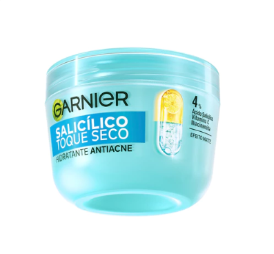
O que é: Hidratante facial com niacinamida + ácido salicílico + ácido hialurônico + vitamina C — 4 ativos em 1 só produto.
Pra quê serve: Niacinamida clareia manchas. Ácido salicílico controla oleosidade, seca espinhas e desobstrói poros. Vitamina C dá luminosidade. Tem efeito blur na aplicação (deixa a pele com aspecto mais uniforme na hora).
Como usar: Aplique no rosto limpo como hidratante final, de manhã ou à noite. 85 gramas rendem muito.
Cuidados: Use protetor solar durante o dia, sem falta. Peles muito secas podem sentir um leve ressecamento — se for o seu caso, use só à noite.
Onde encontrar: Supermercado, farmácia, loja de cosméticos.
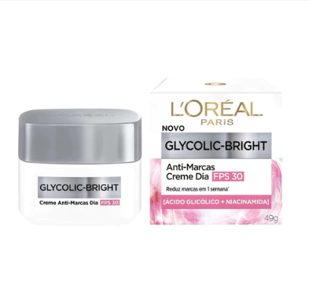
O que é: Hidratante corporal e facial clareador, com dois ativos clareadores e fator de proteção solar médio.
Pra quê serve: Hidrata e clareia ao mesmo tempo. Bom pra manchas de sol e melasma leve. Pode usar no rosto e no corpo.
Como usar: Aplique como hidratante normal depois da limpeza, no rosto e/ou corpo.
Onde encontrar: Supermercado, farmácia, loja de cosméticos.
Esses são os produtos que tratam — clareiam manchas, controlam oleosidade, melhoram textura. Use com cautela e introduza um por vez.
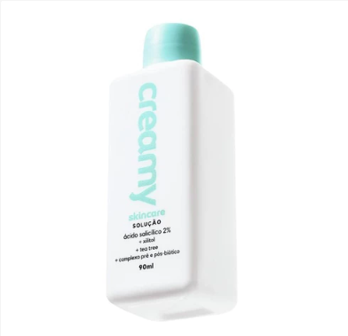
O que é: Solução líquida com ácido salicílico e tea tree (melaleuca).
Pra quê serve: Seca espinhas, controla a oleosidade, reduz poros dilatados.
Como usar: 4 a 5 gotinhas no rosto, espalhe bem. O frasco rende 4 a 5 meses de uso. Use com moderação — não exagere na quantidade.
Cuidados: Pode ressecar em excesso em pele seca ou sensível. Use protetor solar durante o tratamento. Não use em pele irritada.
Onde encontrar: Site da Creamy, farmácias online, Mercado Livre.
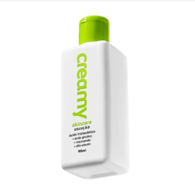
O que é: Solução clareadora com 4 ativos: ácido tranexâmico + ácido glicólico + niacinamida + alfa-arbutin.
Pra quê serve: Clarear manchas. Cada um dos 4 ativos age numa etapa diferente da produção do pigmento da pele — o tranexâmico bloqueia a transferência do pigmento, o alfa-arbutin reforça, o glicólico renova, e a niacinamida uniformiza.
Como usar: 4 a 6 gotinhas no rosto, espalhe bem. Rende muito. Comece em dias alternados, vai aumentando.
Cuidados: Protetor solar é obrigatório durante todo o tratamento. Introduza gradualmente.
Onde encontrar: Site da Creamy, farmácias online, Mercado Livre.
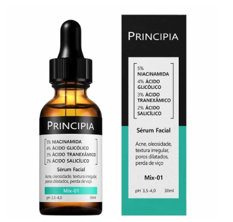
O que é: Sérum facial que combina niacinamida + ácido glicólico + ácido salicílico em uma só fórmula.
Pra quê serve: Niacinamida clareia, glicólico renova e melhora a textura, salicílico controla oleosidade e poros. Bom pra quem quer um produto que faz três coisas.
Como usar: Aplique no rosto limpo antes do hidratante. De manhã, protetor solar por cima é obrigatório.
Cuidados: Introduza gradualmente — comece com dias alternados.
Onde encontrar: Site da Principia, farmácias online, Mercado Livre.
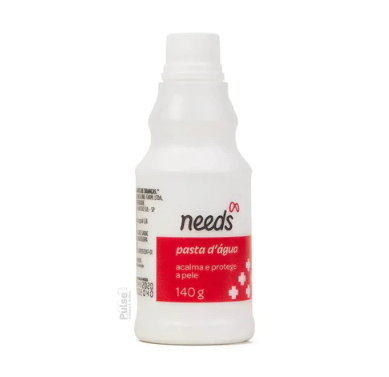
O que é: Produto dermatológico com óxido de zinco. Multifuncional, acessível, vale cada centavo.
Pra quê serve: Prevenir e clarear manchas, acalmar rosácea, secar espinhas e foliculite, evitar assaduras, funcionar como base (primer) antes do protetor solar.
Como usar — de manhã: Camada fina antes do protetor solar. Use maquiagem ou filtro solar com cor por cima.
Como usar — à noite: Camada fina, espere 15 minutos, depois siga com ácidos ou hidratante.
Como usar — pontual: Aplique direto na área-alvo (espinha, foliculite, assadura). Pode usar diariamente, de preferência à noite.
Frequência: Rosto até 2 vezes ao dia. Corpo preferencialmente à noite.
Onde encontrar: Farmácia, supermercado, Mercado Livre.
Filtro solar é o melhor clareador do mundo — porque previne novas manchas antes delas aparecerem. Sem ele, nenhum tratamento funciona. Esses 4 são os melhores custo-benefício.
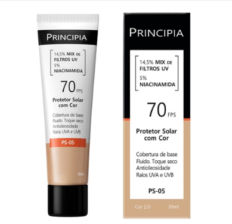
O que é: Protetor solar facial acessível, com niacinamida na fórmula.
Pra quê serve: Proteção solar diária + melhora da qualidade da pele com o uso contínuo (a niacinamida vai uniformizando o tom).
Como usar: Último passo da rotina da manhã. Reaplicar a cada 2 horas se ficar exposta ao sol.
Onde encontrar: Site da Principia, farmácias online, Mercado Livre.
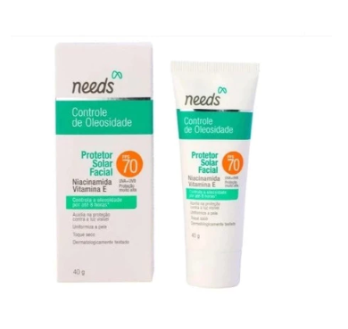
O que é: Protetor solar facial em textura fluida. Sem deixar resíduo branco, e não arde os olhos.
Pra quê serve: Proteção solar diária com acabamento confortável. Bom pra quem usa ácidos.
Como usar: Último passo da rotina da manhã. Reaplicar a cada 2 horas se ficar exposta ao sol.
Cuidados: Obrigatório em qualquer rotina com ácidos.
Onde encontrar: Farmácias, Mercado Livre, lojas de cosméticos.
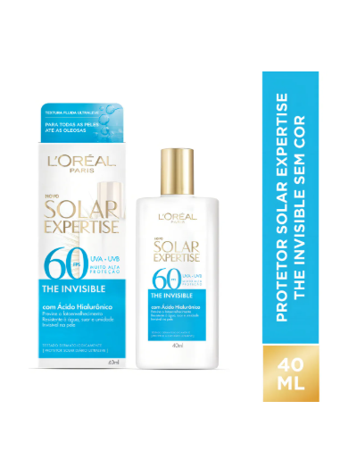
O que é: Protetor solar facial fluido sem cor. Um dos 3 melhores filtros fluidos do mercado brasileiro.
Pra quê serve: Proteção solar com acabamento praticamente invisível. Não arde os olhos. Resistente a água, suor e areia (bom pra praia).
Onde encontrar: Farmácias, supermercados, Mercado Livre.
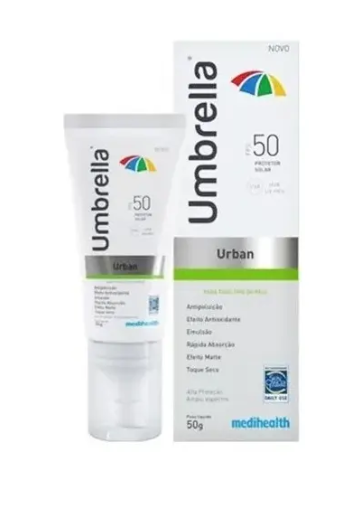
O que é: Protetor solar facial tecnológico sem cor. Tem proteção anti-poluição e anti-luz azul (computador, celular). Efeito matte real.
Pra quê serve: Proteção solar de alta qualidade, sem deixar a pele esbranquiçada. Acabamento aveludado, bom pra quem sofre com brilho.
Como usar: Último passo da rotina da manhã. Reaplicar a cada 2 horas se exposta.
Onde encontrar: Farmácias, Mercado Livre, lojas de cosméticos.
A área do contorno dos olhos é a primeira que envelhece. Esses produtos resolvem pontos esquecidos: olheiras, unhas frágeis, e pele coringa que serve pra tudo.
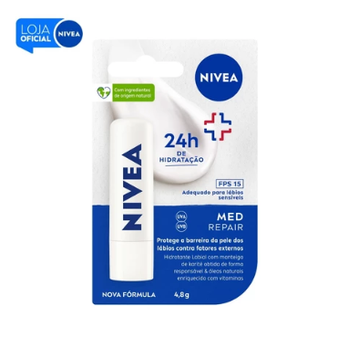
O que é: Hidratante labial Nivea, na versão com manteiga de karité. Tem um uso fora do rótulo (off-label) que viralizou: aplicar ao redor dos olhos.
Pra quê serve: Tratar olheiras craqueladas (aquela pele "rachada" embaixo do olho de tanto ressecada) e amenizar linhas finas dos pés de galinha.
Como usar — ao redor dos olhos: À noite, antes de dormir, aplique uma quantidade muito pequena ao redor dos olhos com o dedo anelar (o dedo mais delicado). Nunca dentro dos olhos.
Como usar — nos lábios: Como hidratante labial normal. Atenção: manteigas oleosas nos lábios durante o dia, expostas ao sol, podem ressecar e envelhecer a região mais rápido. De dia, prefira protetor labial com FPS. Esse Nivea com karité, só à noite.
Onde encontrar: Supermercado, farmácia.
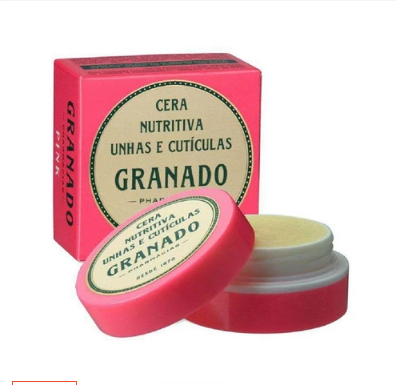
O que é: Cera hidratante nutritiva pra unhas e cutículas.
Pra quê serve: Hidrata cutículas, melhora unhas fracas ou que quebram fácil, resolve aquelas "pelinhas" chatas que aparecem ao redor da unha.
Como usar: Aplique nas cutículas e massageie com a ponta do dedo. Quando aparecer uma pelinha, NÃO PUXE — aplique a cera primeiro, ela amacia.
Onde encontrar: Farmácias, Mercado Livre, lojas Granado.
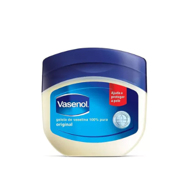
O que é: Vaselina pura (petrolato). Forma uma camadinha sobre a pele que prende a hidratação dentro. NÃO causa câncer. NÃO causa espinha. Esses são mitos antigos que a ciência já desmentiu.
Pra quê serve — várias coisas:
Pra quem é segura: de recém-nascido a idosa. Hipoalergênica.
Cuidados: Não use no rosto inteiro como hidratante principal se você tem pele oleosa — pode pesar. Use só nas áreas-alvo, à noite.
Onde encontrar: Farmácia, supermercado, loja de conveniência.
4 produtos baratos de farmácia que fazem diferença real em cabelo. Pra mais opções naturais (vinagre, babosa, alecrim), veja o bônus "O Que Fazer Quando o Cabelo Começa a Cair".
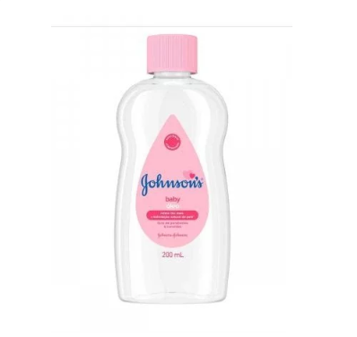
O que é: Óleo mineral clássico de bebê — multifuncional.
Pra quê serve: Hidratação e brilho capilar. Especialmente útil pra cabelos fragilizados, ressecados ou em recuperação depois de química (tintura, alisamento, descoloração).
Como usar: Aplique em cabelo úmido (não encharcado), distribua nas pontas e no comprimento. Não use diariamente — só como tratamento pontual.
Cuidados: Em cabelos oleosos, evite a raiz e o couro cabeludo.
Onde encontrar: Farmácia, supermercado, loja de R$ 1,99.
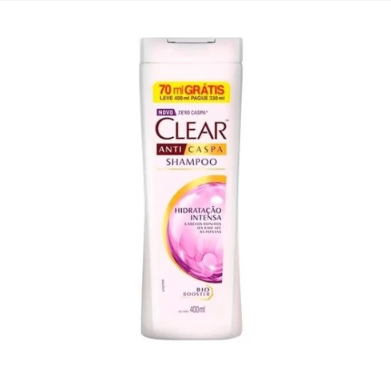
O que é: Shampoo medicado pra caspa com hidratação real.
Pra quê serve: Caspa, dermatite seborreica (descamação amarelada no couro cabeludo), auxílio no controle da queda de cabelo. Serve tanto pra homem quanto pra mulher.
Como usar: Massageie bem o couro cabeludo. Deixe agir por alguns minutos antes de enxaguar. 2 a 3 vezes por semana. Nos outros dias, use shampoo normal.
Onde encontrar: Supermercado, farmácia.
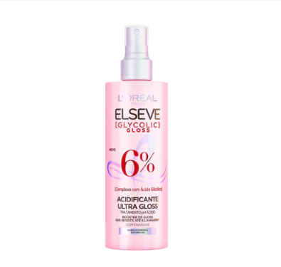
O que é: Acidificante capilar com ácido glicólico — um passo extra que se usa depois do shampoo e antes do condicionador.
Pra quê serve: Realinha as fibras do cabelo, fecha a capinha externa do fio (cutícula), e entrega brilho intenso. É o efeito "ponto de luz" que se faz em salão de cabelereiro.
Como usar: Aplique depois de enxaguar o shampoo, espere agir um pouco, enxágue. Continue com o condicionador normalmente.
Cuidados: Não substitui o condicionador — complementa.
Onde encontrar: Supermercado, farmácia, loja de cosméticos.
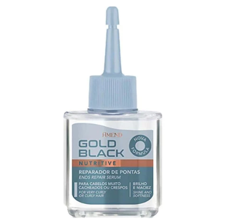
O que é: Óleo de finalização capilar (à base de silicone).
Pra quê serve: Fecha a capinha externa do fio, reduz frizz, adiciona hidratação superficial e dá brilho.
Como usar: Aplique uma pequena quantidade nas pontas. Pode ser em cabelo úmido ou seco.
Cuidados: Não use todos os dias — silicone acumula no fio com o tempo. Faça remoção com um shampoo clarificante periodicamente (1 vez por mês).
Onde encontrar: Lojas de cosméticos populares, Mercado Livre, feiras.
Axila escura, virilha escurecida, cotovelo manchado. 4 produtos baratos pra clarear essas áreas de atrito com paciência. Veja também o Protocolo Chega de Axilas Escuras na Parte 4 desse guia.
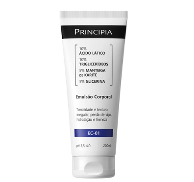
O que é: Hidratante corporal com ácido lático em boa concentração.
Pra quê serve: Clarear e suavizar áreas de atrito: virilha, axila, cotovelos, joelhos, região íntima.
Como usar: Aplique nas áreas-alvo depois do banho, com a pele limpa e seca. Uso regular pra resultado progressivo.
Cuidados: O ácido lático pode causar leve sensibilidade em pele muito fina. Use protetor solar nas áreas expostas ao sol.
Onde encontrar: Site da Principia, farmácias online, Mercado Livre.
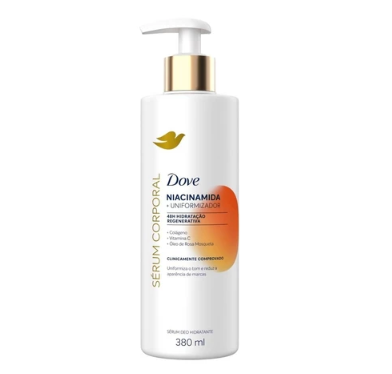
O que é: Hidratante corporal com niacinamida. Textura cremosa, não pegajosa, absorção rápida.
Pra quê serve: Clarear axila escurecida e uniformizar o tom geral da pele do corpo. Boa alternativa pra quem não se adapta a desodorante aerossol ou roll-on (que pode irritar).
Como usar: Aplique depois do banho, com a pele seca e limpa. Uso regular pra resultado progressivo.
Cuidados: Seguro pra uso diário. Pra manter o resultado, precisa de uso contínuo.
Onde encontrar: Supermercado, farmácia, loja de cosméticos.
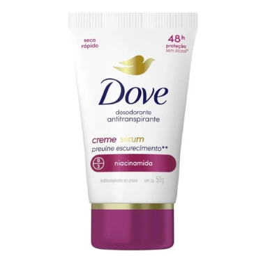
O que é: Desodorante em formato creme, com niacinamida na fórmula.
Pra quê serve: Proteção contra odor + clareamento progressivo da axila. O formato creme reduz o atrito na hora de aplicar (o aerossol com álcool contribui pra escurecer a axila com o tempo).
Como usar: Aplique na axila limpa e seca depois do banho.
Cuidados: Não substitui antitranspirante em quem sua muito.
Onde encontrar: Supermercado, farmácia, loja de cosméticos.
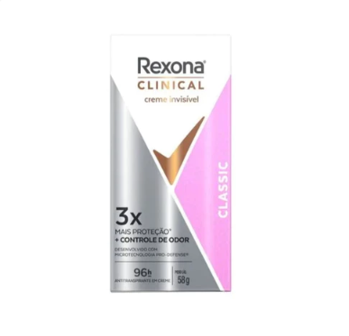
O que é: Desodorante antitranspirante de uso clínico, com ativos clareadores — 2 em 1.
Pra quê serve: Proteção intensa contra suor e odor, com clareamento progressivo da axila ao longo do uso.
Como usar: Aplique na axila limpa e seca depois do banho.
Cuidados: Aguarde 24 horas depois da depilação antes de aplicar.
Onde encontrar: Supermercado, farmácia.
Pra problemas mais específicos do corpo: bactérias que causam mau cheiro, e ingredientes que potencializam outros produtos.
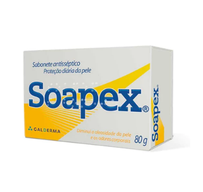
O que é: Sabonete bactericida potente — um tratamento antimicrobiano de verdade, não apenas sabonete comum.
Pra quê serve: Eliminar as bactérias causadoras de mau cheiro corporal forte e chulé (bromidrose).
Como usar: Use APENAS nas áreas-alvo (axila, pés, virilha) — NÃO no corpo todo.
Cuidados: Como mata bactérias, também mata as bactérias boas da sua pele. Por isso o uso é localizado e pontual, não diário no corpo todo. Hidrate depois de usar.
Onde encontrar: Farmácia, Mercado Livre.
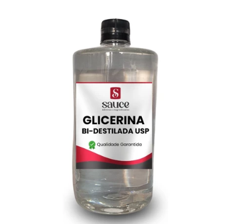
O que é: Glicerina pura — um ingrediente que puxa água pra dentro da pele e do fio do cabelo. Está presente em quase todos os hidratantes de marca cara.
Pra quê serve — cabelo: Melhora frizz, adiciona brilho e maciez quando misturada num creme ou leave-in.
Pra quê serve — rosto e corpo: Hidratação extra quando misturada em outro hidratante ou sérum.
Como usar — cabelo: Misture 10 a 20 ml de glicerina em 100 ml do seu leave-in ou máscara capilar.
Como usar — rosto/corpo: Misture algumas gotas com o seu hidratante ou sérum habitual.
Onde encontrar: Farmácia de manipulação, loja de cosméticos, Mercado Livre.
Produtos coreanos são os mais falsificados do mundo. O Retinal Shot (o primeiro da lista) é o mais copiado.
Esses produtos podem ser comprados pela internet. Abaixo de cada um eu deixei os links que eu recomendo e que não são falsificados. O mercado de beleza coreana é o que mais sofre com falsificações no Brasil — fique atenta a preços muito abaixo do normal e a vendedores sem selo de "oficial".
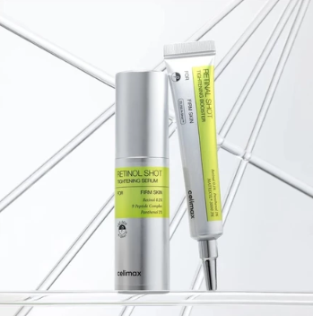
O que é: Sérum (shot) com retinal a 0,1% — o dobro da concentração máxima permitida no Brasil em cosmético (0,05%). Tem ativos calmantes integrados (niacinamida, glicerina, peptídeo Matrixyl) que reduzem a irritação típica dos retinoides.
Por que é diferente dos remédios: Ácidos de tratamento dermatológico (como Vitacid, Vitanol) causam vasinhos, sensibilidade severa e exigem prescrição médica. O Retinal Shot tem potência alta sem essas irritações fortes, porque a fórmula é equilibrada com ativos calmantes.
Pra quê serve: Prevenir e melhorar linhas finas e rugas. Estimular a produção de colágeno (com a ajuda do peptídeo Matrixyl, que é como um "mensageiro" que avisa a célula pra produzir mais colágeno). Melhorar a qualidade geral da pele.
Tempo pra ver resultado: 30 a 60 dias (4 a 8 semanas) pra maioria. Peles muito danificadas podem levar até 90 dias. Constância é fundamental — uso aleatório não funciona.
Pode usar ao redor dos olhos? Sim, mas com protocolo: primeiro use no rosto por 2 a 3 semanas sem sensibilidade. Depois aplique uma quantidade menor que um grão de areia abaixo do olho. Se não houver sensibilidade, aplique na pálpebra superior. Sempre teste antes.
Hidratante antes? Não é obrigatório, mas é recomendado. Passe um hidratante espesso (sem perfume e sem corante) à noite, espere 15 minutos, depois aplique o retinal. Pele mais hidratada tem barreira mais forte e tolera melhor o ácido.
Quantidade correta: Rosto inteiro = tamanho de uma ervilha grande. Uso pontual (testa, ao redor dos olhos, bigode chinês) = quantidade bem menor. Não exagere — mais produto não significa mais resultado.
Cuidados: Introduza gradualmente — dias alternados no início. Protetor solar de manhã é obrigatório. Não combine com outros ácidos fortes na mesma rotina.
Onde encontrar: Loja oficial verificada na internet. É o produto mais falsificado do K-Beauty — comprar apenas em fonte oficial.
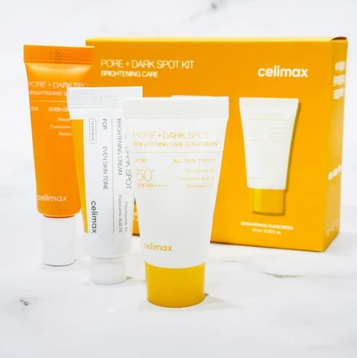
O que é: Creme clareador e hidratante da Celimax — age em duas frentes ao mesmo tempo: clareia as manchas que já existem E evita que novas manchas se formem (bloqueia a produção de pigmento na raiz).
A sacada genial: é clareador e hidratante em um só produto. Você pula a etapa de aplicar hidratante separado — as ceramidas da fórmula protegem a barreira da pele enquanto os outros ativos vão clareando.
Os 4 ativos:
Pra quê serve: Melasma, manchas de acne, manchas de sol, manchas de envelhecimento. Pode usar no rosto e no corpo.
Frequência: MANHÃ e NOITE — pode usar duas vezes ao dia. Usar duas vezes potencializa muito os resultados.
Como usar: Aplique no rosto limpo, manhã e noite, na quantidade de uma ervilha grande. De manhã, sempre seguido de protetor solar.
Cuidados: Protetor solar é obrigatório após a aplicação. Compre apenas em loja oficial verificada — esse produto é muito falsificado.
Onde encontrar: Loja oficial verificada na internet.
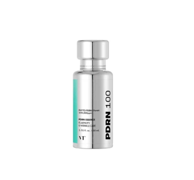
O que é: Essência com PDRN, um ativo usado em clínicas pra cicatrização depois de procedimentos estéticos. Textura leitosa.
Pra quê serve: Hidratação profunda, recuperação da barreira da pele, dar viço e brilho saudável.
Quando faz mais diferença: Logo depois de procedimentos como laser de CO2 (com orientação médica), pra ajudar na recuperação.
Onde encontrar: Loja oficial verificada na internet.
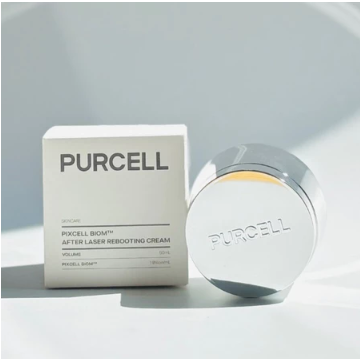
O que é: Creme hidratante de textura densa que hidrata intensamente sem pesar na pele. Os usuários descrevem como "um carinho de anjo no rosto".
Ideal pra: Pele seca, sensível, ou em recuperação depois de algum procedimento.
Onde encontrar: Loja oficial verificada na internet.
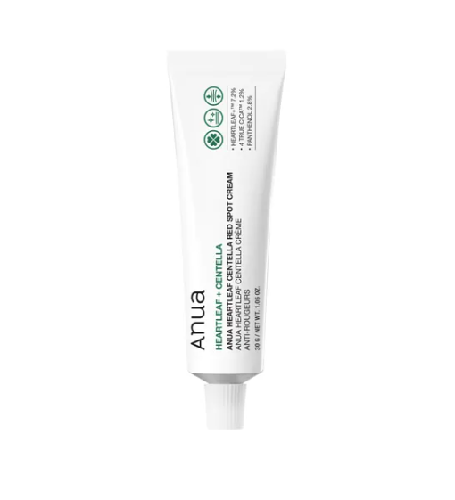
O que é: Creme calmante com heartleaf e centella asiática. Sensação de pomada cicatrizante.
Pra quê serve: Acalmar rosácea, vermelhidão e pele irritada.
Onde encontrar: Loja oficial verificada ou importação direta da Coreia.
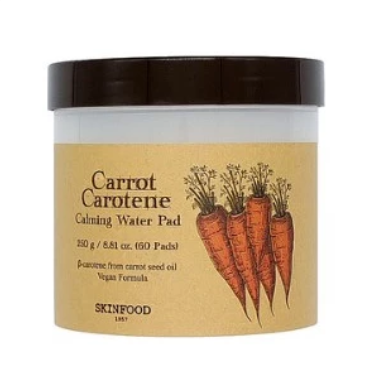
O que é: Almofadas tônicas com extrato de cenoura.
Pra quê serve: Acalmar e tonificar a pele. Tem cheiro natural calmante.
Onde encontrar: Loja oficial verificada na internet.
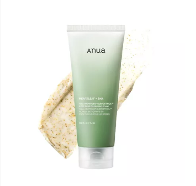
O que é: Gel de limpeza facial com heartleaf e BHA (um tipo de ácido salicílico).
Pra quê serve: Limpeza suave que ainda melhora a textura da pele. O BHA desobstrói poros durante o banho.
Onde encontrar: Loja oficial verificada na internet.
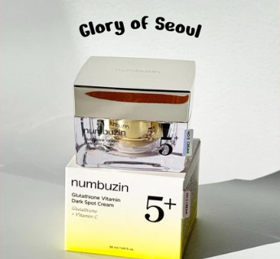
O que é: Clareador tecnológico com vitamina C e glutationa (um ativo clareador que viralizou no mercado coreano).
Observação: É o produto mais caro dessa lista — por isso ficou em 8º apesar da alta qualidade. Vale a pena se você já tentou outros clareadores e não funcionaram.
Onde encontrar: Loja oficial verificada na internet.
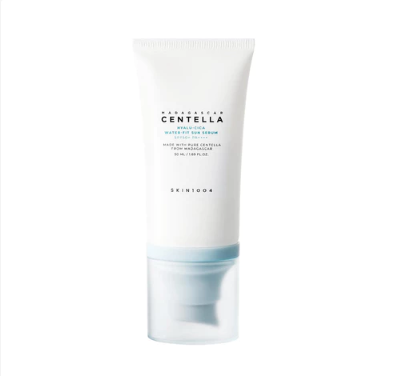
O que é: Protetor solar fluido com ácido hialurônico e centella asiática.
Pra quê serve: Proteção solar com hidratação no mesmo passo. Não arde os olhos.
Onde encontrar: Loja oficial verificada na internet.
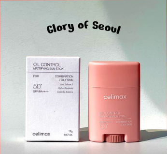
O que é: Protetor solar em bastão, prático pra reaplicação ao longo do dia. Tem efeito matte real — não deixa a pele esticada e nem oleosa.
Como usar: Deslize suavemente sobre o rosto a cada 2 horas de exposição solar. Não precisa abrir o produto, espalhar com a mão e tudo mais — fica prático pra carregar na bolsa.
Onde encontrar: Loja oficial verificada na internet.
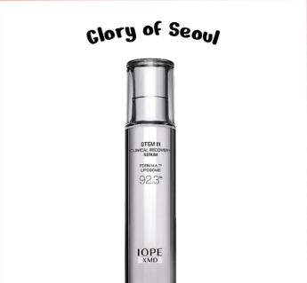
O que é: Creme/essência com PDRN + ácido hialurônico em lipossomas (pequenas cápsulas que entregam o ativo mais fundo na pele).
Pra quê serve: Cicatrização acelerada e recuperação depois de procedimentos estéticos.
Onde encontrar: Loja oficial verificada na internet.
Agora que você conhece os produtos, vou te mostrar como combinar eles em protocolos pra problemas específicos que a mulher 50+ mais sofre. São 4 protocolos, cada um com passo a passo claro, o que comprar e o que esperar.
São esses:
A pele das mãos é uma área difícil. Muitas mulheres, especialmente acima dos 50, podem precisar de procedimentos estéticos (com dermatologista) pra resultados mais expressivos.
Com cuidado em casa, você vai melhorar muito a qualidade, a hidratação e clarear manchinhas — mas não espere milagre instantâneo. A consistência é o que faz a diferença. Faça o protocolo todos os dias e, com o tempo, sua mão vai mostrar resultado real.
| Causa | O que acontece |
|---|---|
| Falta de hidratação | Pele craquelada, com aspecto de pergaminho e sem viço |
| Manchas solares | Manchas escuras causadas por anos de exposição solar nas mãos |
| Perda de colágeno | Pele mais fina, menos firme, aspecto envelhecido |
| Descuido na rotina | Mãos raramente recebem o mesmo cuidado que o rosto — e entregam a idade |
O que é: antioxidante poderoso — impede o envelhecimento precoce e ajuda a tratar as manchas solares.
Por que nas mãos: as manchas das mãos são, em grande parte, dano solar acumulado ao longo dos anos. A vitamina C começa a tratar esse dano e ainda protege contra novos.
Como aplicar: tamanho de meia ervilha em cada mão. Espalhe bem por toda a superfície — costas, dedos e punhos.
Concentração indicada: entre 10% e 20% pra resultado efetivo.
Exemplos de produtos: Vitamina C da Principia (VC-10), Vitamina C da Garnier, Vitamina C da L'Oréal. Qualquer vitamina C estável de marca conhecida — atente-se à concentração.
Por que é o pulo do gato: a maioria das queixas das mãos vem de dois problemas combinados — desidratação e manchas. Um hidratante clareador resolve os dois ao mesmo tempo.
O que ele faz:
Como aplicar: tamanho de meia ervilha em cada mão. Aplique por cima da vitamina C — ele sela os ativos na pele.
Exemplos de produtos:
Por que não é retinol nas mãos: pra mãos, o ácido glicólico é mais indicado que o retinol. Ele age em várias queixas ao mesmo tempo, com mais eficiência nessa região específica.
O que ele faz nas mãos:
Concentração correta: entre 9,7% e 10% — essa é a porcentagem ideal pra mão. Menos que isso tem pouco efeito. Mais que isso pode irritar.
Como aplicar: aplique nas mãos à noite, depois da limpeza. Espalhe bem pelas costas das mãos, dedos e punhos. Deixe absorver — não enxágue.
Cuidados:
| Período | Passo | Ativo | Quantidade |
|---|---|---|---|
| Manhã | 1º — Vitamina C | Vitamina C 10 a 20% | Meia ervilha em cada mão |
| Manhã | 2º — Hidratante Clareador | Niacinamida + clareadores | Meia ervilha em cada mão |
| Manhã | 3º — Protetor Solar | FPS 30 mínimo | Cobrir todo o dorso das mãos |
| Noite | Ácido Glicólico | 9,7 a 10% | Cobrir todo o dorso das mãos |
Depois de aplicar a vitamina C com o hidratante clareador de manhã, use luvas de silicone ou plástico por 5 a 10 minutos.
Essa cobertura potencializa a absorção dos ativos — a umidade e o calor das mãos forçam a pele a absorver mais.
Ainda melhor: faça isso antes de dormir, com o hidratante da noite. Você acorda com as mãos suaves e nutridas.
A maioria das mulheres tenta tratar olheira com um creme genérico e fica frustrada quando não funciona. O motivo é simples: existem 4 tipos diferentes de olheira, e cada um precisa de um tratamento próprio.
Antes de comprar qualquer produto, identifique o tipo da sua olheira:
Como identifica: a cor é roxa ou azulada. Piora quando você está cansada, com rinite, sinusite, ou quando o tempo está frio.
Melhor abordagem: Hirudoid pomada, ácido tranexâmico, vitamina K.
Como identifica: a cor é marrom ou escura, parecendo uma mancha na pele.
Melhor abordagem: cafeína, ácido tranexâmico, niacinamida, retinol. É essa que a "misturinha de milhões" trata (você vai ver a seguir).
Como identifica: a olheira é fundinha — a sombra vem da perda de volume ósseo ou de gordura na região.
Melhor abordagem: preenchimento com ácido hialurônico feito por profissional habilitado. Creme não resolve.
Como identifica: inchaço abaixo do olho, costuma piorar de manhã.
Melhor abordagem: drenagem linfática, cafeína, compressas geladas. O efeito é temporário — não tem cura permanente sem procedimento estético.
Como identifica: combinação de dois ou mais tipos acima.
Melhor abordagem: tratar cada causa separadamente.
Se a sua olheira é estrutural — fundinha, causada por perda de massa óssea ou de gordura na região — não existe creme no mundo que vai devolver o volume perdido.
Nesses casos, o tratamento indicado é preenchimento com ácido hialurônico feito por dermatologista ou cirurgião. Isso não é falha sua — é fisiologia. Saber o tipo da sua olheira é o primeiro passo pra não gastar dinheiro à toa.
Esses são os cremes mais indicados pra área dos olhos, organizados do mais barato pro mais sofisticado:
Por que é a primeira? Skincare democrático — pra todos os bolsos. Multifuncional e muito subestimada.
Pra quê serve nos olhos:
Quanto aplicar: uma camadinha bem FINA — quase translúcida. Excesso fica brilhante e pode entrar no olho.
Onde aplicar: ao redor dos olhos (canto externo, pés de galinha, osso embaixo). Evite a pálpebra móvel próxima aos cílios.
Como aplicar: com o dedo anelar, em leves batidinhas. À noite, antes de dormir.
Frequência: todas as noites, sem problema. É um dos produtos mais seguros que existem.
"Selar a cafeína" NÃO tem nada a ver com o café que você bebe. JAMAIS passe café líquido, borra de café ou qualquer coisa parecida ao redor dos olhos — isso pode causar irritação séria.
A "cafeína" aqui é o ATIVO COSMÉTICO presente em séruns e cremes pra olheiras — por exemplo, o Mix-02 da Principia (cafeína + ácido tranexâmico) listado nessa mesma página, ou outros cremes de olheira com cafeína na fórmula.
Como fazer a selagem corretamente:
Você vê esse passo a passo no protocolo da "Misturinha de Milhões" mais adiante nessa Parte 4.
Onde encontrar: Farmácia, supermercado, loja de conveniência.
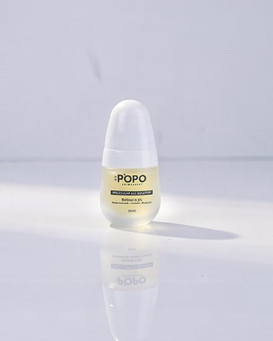
Por que é especial: esse é oftalmologicamente testado — tem estudo pra uso na área dos olhos e no rosto inteiro. A maioria dos retinóis brasileiros não tem esse estudo. Esse tem. E é nacional.
O que faz:
Pra quem: quem quer tratar linhas de expressão ao redor dos olhos com segurança.
Quanto aplicar: 2 a 3 gotinhas — uma pra cada lado, dividindo em pequenos pontos.
Onde aplicar: ao redor dos olhos — no osso embaixo, no canto externo (pés de galinha) e na têmpora. Evite a pálpebra móvel próxima aos cílios.
Como aplicar: com o dedo anelar (é o mais delicado), em leves batidinhas até absorver. Não esfregue, não puxe a pele.
Frequência: SÓ À NOITE. Comece com 2 a 3 vezes por semana nas primeiras 3 semanas. Depois pode passar pra 4 ou 5 vezes na semana. Não use todos os dias logo no início.
Tempo pra absorver: 5 a 10 minutos. Espere antes de deitar pra não passar tudo no travesseiro.
Onde encontrar: Farmácias online, Mercado Livre.
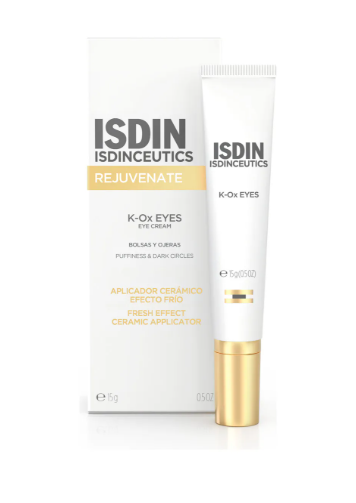
Diferencial único: é um dos únicos produtos do mercado brasileiro com vitamina K na fórmula — um ativo que ajuda na circulação e na drenagem da região dos olhos.
O que faz:
Pra quem: olheiras vasculares (roxas ou azuladas) e pra quem pode investir mais.
Quanto aplicar: meia ervilha por olho. É concentrado — não exagere.
Onde aplicar: ao redor dos olhos, sobre a olheira (osso embaixo, canto interno e externo). Evite a pálpebra superior próxima aos cílios.
Como aplicar: com o dedo anelar em batidinhas suaves, do canto interno em direção ao externo. Sem esfregar.
Frequência: manhã E noite, todos os dias. Constância é o que faz o resultado.
Tempo pra absorver: 3 a 5 minutos.
Quando ver resultado: 30 a 60 dias de uso contínuo. Olheiras vasculares clareiam progressivamente.
Cuidados importantes: de manhã, pode usar protetor solar por cima depois que absorver. À noite, é o ÚLTIMO passo antes de dormir (depois dele, nada).
Onde encontrar: Farmácia ou loja online.
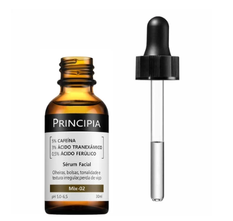
Os ativos: Cafeína + Ácido Tranexâmico.
O que faz:
Age nos dois tipos mais comuns de olheira ao mesmo tempo.
Pra quem: olheiras vasculares E olheiras com manchinha — é um ótimo custo-benefício.
Quanto aplicar: 2 a 3 gotinhas — uma pra cada olho, dividindo em 3 a 4 pequenos pontos ao redor do olho.
Onde aplicar: ao redor dos olhos — osso embaixo do olho, têmpora e canto externo. Evite a linha dos cílios e a pálpebra móvel.
Como aplicar: com o dedo anelar, em batidinhas suaves do canto interno em direção ao externo. Não esfregue.
Frequência: manhã E noite, todos os dias.
Tempo pra absorver: 3 a 5 minutos. Espere antes de aplicar outros produtos por cima.
Cuidados importantes: use filtro solar de manhã (o ácido tranexâmico fica mais eficiente com proteção). Pode ser combinado com hidratante depois de absorver.
Onde encontrar: Site da Principia, farmácias online, Mercado Livre.
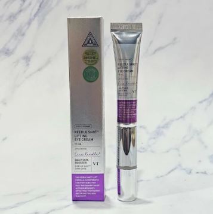
Diferencial: tem um aplicador com vibração que já faz a drenagem da região dos olhos enquanto você aplica.
O que faz: creme pra área dos olhos com ação de firmeza e drenagem. A drenagem fica automatizada pelo aplicador.
Pra quem: quem pode investir mais e quer praticidade na hora da drenagem.
Quanto aplicar: uma gotinha por olho — o aplicador na ponta do tubo dispensa a quantidade certa automaticamente.
Onde aplicar: ao redor dos olhos — pálpebra inferior, canto externo (pés de galinha), têmpora. Evite a pálpebra móvel próxima aos cílios.
Como aplicar: deslize o aplicador vibratório devagar, do canto interno em direção ao externo. A vibração já faz a drenagem — você não precisa esfregar.
Frequência: manhã E noite, pode usar todo dia.
Tempo de aplicação: 30 segundos a 1 minuto pra cada olho com o aplicador.
Cuidados importantes: não use no rosto inteiro — é específico pra área dos olhos. Sobre falsificações: o aplicador legítimo tem ergonomia e vibração diferenciadas. Compre APENAS em loja oficial.
Onde encontrar: Loja oficial verificada na internet — atenção pra falsificações.
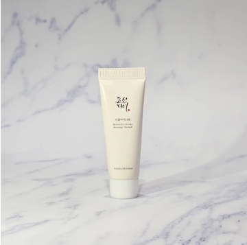
Diferencial: contém retinal liberado especificamente pra uso na área dos olhos — algo raro no mercado.
O que faz: o retinal estimula colágeno e melhora linhas finas. Tem ação renovadora e anti-envelhecimento ao redor dos olhos.
Pra quem: quem quer o poder do retinal especificamente na área dos olhos.
Quanto aplicar: meia ervilha — uma quantidade pequena pra cada olho.
Onde aplicar: ao redor dos olhos, especialmente no canto externo (pés de galinha) e na pálpebra superior. Esse é um dos poucos com retinal liberado pra pálpebra superior — mas evite a linha dos cílios.
Como aplicar: com o dedo anelar em leves batidinhas até absorver. Não esfregue.
Frequência: SÓ À NOITE. Comece com 3 vezes por semana e aumente gradualmente. Não use de manhã.
Tempo pra absorver: 5 a 10 minutos. Espere antes de deitar pra não passar tudo no travesseiro.
Onde encontrar: Loja oficial verificada na internet — atenção pra falsificações.
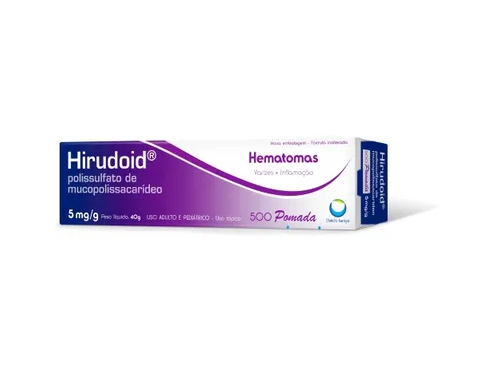
Pra quê serve: olheiras vasculares (roxinhas) — especialmente em quem tem rinite ou sinusite. É o melhor pra a corzinha roxa/arroxeada específica.
Quanto aplicar: uma quantidade BEM PEQUENA — do tamanho de meio grão de arroz pra cada olho. Mais que isso não acelera nada e pode escorrer.
Onde aplicar: APENAS AO REDOR DOS OLHOS — no osso embaixo do olho (na área entre a olheira roxa e a maçã do rosto). JAMAIS dentro dos olhos, na pálpebra móvel próxima aos cílios, nem na linha dos cílios. Se sobrar excesso, NUNCA esfregue em direção ao olho — sempre afaste do olho.
Como aplicar: com o dedo anelar (é o mais fraco, faz menos pressão). Faça leves batidinhas até a pomada absorver — sem esfregar, sem puxar.
Quanto tempo deixar: a pomada absorve sozinha em 5 a 10 minutos. Não precisa enxaguar. Se você sentir excesso oleoso depois de 10 minutos, retire suavemente com um algodão SECO (não molhado) tocando levemente — sem esfregar.
Frequência: 1 vez ao dia, à NOITE, antes de dormir. Não use de manhã (a pomada brilha na luz do dia).
Onde encontrar: Farmácia (pode pedir no balcão — venda livre).
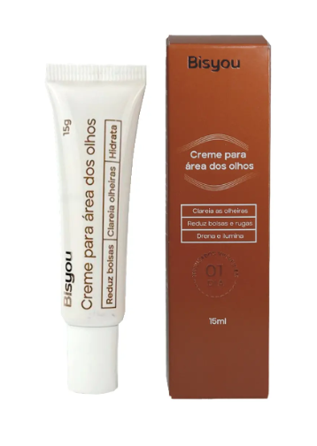
Diferencial: tem uma corzinha — disfarça a olheira visualmente enquanto trata.
O que faz: clareador + cobertura de cor discreta. A ação é mais focada no clareamento do que nas linhas finas.
Quanto aplicar: meia ervilha por olho. Pode regular pra mais cobertura ou menos cobertura, dependendo do quanto quer disfarçar.
Onde aplicar: ao redor dos olhos, especialmente sobre a olheira. A corzinha se mistura com a pele e disfarça enquanto trata.
Como aplicar: com o dedo anelar em leves batidinhas. Esfumar bem pra a cor mesclar uniformemente com a pele do rosto.
Frequência: manhã e noite, todos os dias. De manhã funciona quase como uma "base" pra a área dos olhos.
Tempo pra absorver: 2 a 3 minutos.
Cuidados importantes: pode usar protetor solar por cima. Se for sair em foto importante, deixa um pouco mais de tempo pra a cor mesclar com a pele.
Onde encontrar: Loja online da marca, Mercado Livre.
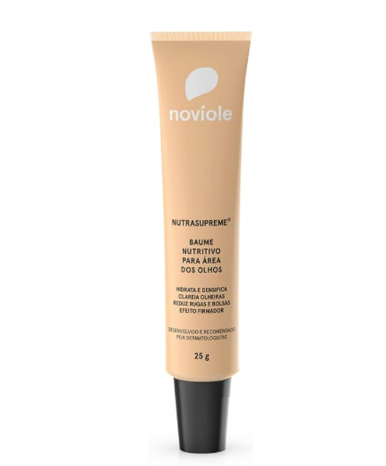
O que faz: bom pra linhas finas ao redor dos olhos. Ajuda em olheiras com corzinha discreta.
Pra quem: quem busca uma opção nacional acessível focada em linhas finas e hidratação.
Quanto aplicar: 2 a 3 gotinhas — uma pra cada olho.
Onde aplicar: ao redor dos olhos — osso embaixo e canto externo (pés de galinha).
Como aplicar: com o dedo anelar em batidinhas suaves até absorver. Sem esfregar.
Frequência: manhã e noite, todos os dias.
Tempo pra absorver: 3 a 5 minutos.
Cuidados importantes: bom pra quem tem pele sensível na área dos olhos. Hidratação leve, sem ressecar. Pode usar protetor solar por cima de manhã.
Onde encontrar: Loja online da marca, Mercado Livre.
Esse é o protocolo de 3 passos mais famoso pra olheira marrom (pigmentar) com bolsas. Simples, barato e com evidência por trás.
Quando falamos em "cafeína" aqui, estamos falando do ATIVO COSMÉTICO que está em séruns e cremes pra olheiras. JAMAIS passe café líquido, borra de café ou pó de café ao redor dos olhos — pode causar irritação séria, mancha e até queimadura.
O produto que você vai usar nesse passo é um sérum/creme industrial com cafeína na fórmula — por exemplo, o Mix-02 da Principia (cafeína + ácido tranexâmico), que já foi apresentado nessa Parte 4.
O que usar: um sérum ou creme com cafeína na fórmula — o Mix-02 da Principia é o mais indicado (cafeína + ácido tranexâmico, ataca olheira marrom E vascular ao mesmo tempo).
Quanto aplicar: 1 a 2 gotinhas em cada lado — uma gota dividida em 3-4 pequenos pontinhos ao redor do olho.
Onde aplicar: ao redor dos olhos, no osso embaixo do olho, no canto externo (pés de galinha) e na têmpora. Evite a linha dos cílios e a pálpebra móvel próxima ao olho.
Como aplicar: com o dedo anelar (é o mais delicado — faz menos pressão, e a pele da região é a mais fina do rosto). Faça leves batidinhas, sem esfregar, sem puxar.
Tempo de absorção: espere de 2 a 3 minutos antes de passar pro PASSO 2. O sérum precisa entrar na pele.
O que faz:
O que usar: rolinho facial de jade, quartzo rosa ou metal (vende em farmácia, Mercado Livre ou Shopee, custo R$ 10-30).
Como fazer: deslize o rolinho devagar com pressão LEVE ao redor dos olhos, SEMPRE do canto interno (perto do nariz) em direção ao externo (perto da têmpora). Nunca volte o movimento — sempre na mesma direção, do nariz pra fora. Repita 6 a 10 vezes em cada olho.
Duração: 1 a 2 minutos no total (cerca de 30 segundos a 1 minuto por olho).
Atenção à direção: a direção certa é a direção do sistema linfático natural — do nariz pra fora. Movimentar ao contrário empurra o líquido pro lugar errado e pode INCHAR ainda mais.
O que faz:
O que usar: vaselina simples de farmácia (a sólida em pote pequeno, qualquer marca).
Quanto aplicar: uma camadinha FININHA — quase translúcida. Mais que isso fica brilhante demais e pode entrar nos olhos.
Onde aplicar: POR CIMA da área onde você aplicou o sérum no PASSO 1 — ao redor dos olhos, mantendo distância do olho em si.
Como aplicar: com o dedo anelar, em leves batidinhas. Não esfregue.
Por que funciona: a vaselina forma uma barreira que impede a evaporação dos ativos do PASSO 1. Isso multiplica a absorção da cafeína durante a noite — a pele recebe o ativo por muito mais tempo.
O que NÃO usar: NÃO use café, borra de café, óleo de cozinha, óleo de bebê nem nenhum produto improvisado. Só vaselina pura.
Frequência da Misturinha completa: 1 vez ao dia, à NOITE, antes de dormir. Pode fazer todos os dias.
De manhã: lave o rosto normalmente com água morna — a vaselina sai com facilidade.
Resultado esperado: em 30 a 60 dias de uso consistente, a olheira marrom clareia progressivamente e as bolsas matinais reduzem.
Custo total do protocolo: R$ 5-10 (vaselina) + custo do sérum de cafeína (R$ 50-80 o Mix-02) + R$ 10-30 (rolinho — compra uma vez, dura anos). Um dos protocolos mais acessíveis pra olheiras.
| Tipo | Protocolo |
|---|---|
| Olheira marrom (pigmentar) | Misturinha de Milhões: cafeína (Mix-02) + drenagem + vaselina |
| Olheira roxa (vascular) | Hirudoid pomada + Mix-02 + ISDIN K-Ox |
| Olheira estrutural (fundinha) | Preenchimento com profissional — creme não resolve |
| Bolsas | Drenagem linfática + cafeína (efeito temporário) |
| Olheira mista | Combinar os ativos adequados pra cada tipo presente |
O clareamento é uma escolha pessoal. Essas áreas têm a cor que têm por razões naturais — atrito, predisposição genética, hormônios.
Esse protocolo é pra quem se incomoda e quer tratar. Não há obrigação de clarear nada. Quem não se incomoda não precisa fazer nada — e isso é tão válido quanto qualquer protocolo.
| Causa | O que acontece |
|---|---|
| Atrito constante | O roçar da pele em movimento estimula a produção de melanina — a pele escurece como reação de defesa |
| Desodorante aerossol | O álcool e os resíduos do aerossol irritam e escurecem a região da axila com o uso contínuo |
| Resíduo de desodorante | A camada acumulada bloqueia a entrada dos ativos clareadores na pele |
| Falta de hidratação | Pele desidratada nas áreas de atrito fica mais escura e com textura irregular |
| Limpeza inadequada | Sem limpeza profunda, os resíduos acumulados bloqueiam qualquer tratamento |
Por que é essencial: o clareador não penetra em pele suja ou com resíduo de desodorante. Sem esse passo, nada funciona.
Como limpar a axila:
Como limpar a virilha e a região íntima:
Por que hidratar antes do clareador: pele bem hidratada tem barreira mais forte e absorve melhor os ativos clareadores. Muito do escurecimento das axilas e virilhas vem do atrito em pele desidratada.
O que usar: hidratante corporal leve — pode ser o mesmo que você já usa no corpo.
Opcional: hidratante com niacinamida pra potencializar o clareamento já nessa etapa (como o Dove Niacinamida que está na Parte 2 desse guia).
Como aplicar: aplique na área limpa e seca. Massageie suavemente até absorver.
Produto indicado: Clareador Dérmico Cicatribem — combina 6 ativos clareadores numa só fórmula hidratante.
Os 6 ativos clareadores:
Por que tem parafina e glicerina na fórmula: pra hidratar enquanto clareia. Como o escurecimento vem do atrito (e atrito vem de pele desidratada), o produto trata a causa (hidratação) e o sintoma (mancha) ao mesmo tempo.
Frequência de uso: manhã e noite, depois da limpeza e da hidratação. Axila, virilha, região íntima e joelhos escuros.
Pode usar no rosto? Sim, manhã e noite, sempre com hidratante e filtro solar obrigatórios.
Obrigatório nas áreas expostas ao sol: colo, joelhos, braços (e na axila quando você usar regata).
Sem filtro solar, o sol desfaz o trabalho do clareador — você gasta dinheiro e energia, e a pele volta a escurecer.
O clareador não age sozinho. Se o resultado não aparece, geralmente é porque algum desses pontos está faltando:
| Momento | Passo | O que fazer |
|---|---|---|
| Sempre | 1º — Limpeza | Sabonete + óleo de limpeza 1x por semana pra remover resíduos do desodorante |
| Sempre | 2º — Hidratação | Hidratante corporal leve na área limpa e seca |
| Manhã e noite | 3º — Clareador | Clareador Dérmico Cicatribem sobre a pele hidratada |
| Diariamente | 4º — Filtro Solar | Obrigatório nas áreas expostas ao sol |
| Substituir | Desodorante | Trocar aerossol por creme ou roll-on sem álcool |
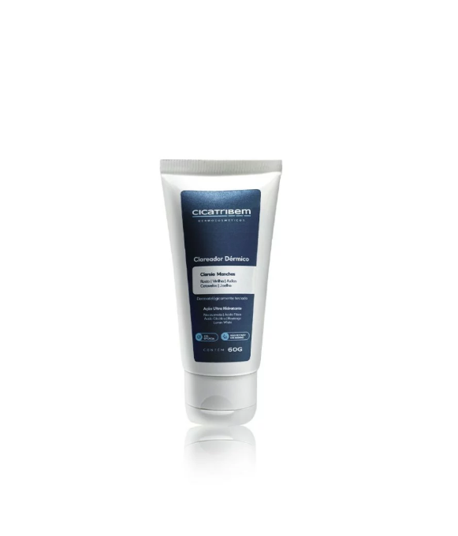
O que é: Clareador corporal com 6 ativos clareadores combinados em uma fórmula hidratante. O produto principal do protocolo acima.
Pra quê serve: Axila, virilha, região íntima, joelhos escuros, cotovelos escuros. Pode usar também no rosto.
Quanto aplicar: uma camadinha fina — o suficiente pra cobrir a área escurecida. Não exagere, mais não acelera.
Onde aplicar: SEMPRE em pele LIMPA e SECA. Aplique direto sobre a área a clarear (axila, virilha, joelhos, cotovelos, dorso das mãos, ou rosto).
Como aplicar: espalhe com a ponta dos dedos em movimentos circulares suaves até absorver. Massagem leve, sem esfregar com força.
Frequência: manhã E noite, depois da limpeza e da hidratação. Pular dias atrasa o resultado.
Tempo pra absorver: 3 a 5 minutos. Espere antes de vestir roupa pra não passar tudo no tecido.
Quando ver resultado: 30 a 90 dias dependendo da área e do tom inicial. Áreas íntimas demoram mais.
Onde encontrar: Farmácias físicas ou loja oficial online.
Existem duas partes do corpo que mais entregam a idade real de uma pessoa: o pescoço e as mãos. Muitas mulheres (e até artistas famosas) cuidam muito bem do rosto com procedimentos e skincare, mas esquecem completamente do pescoço — e aí o contraste aparece de um jeito cruel: o rosto parece de 45, o pescoço parece de 65.
A boa notícia: você NÃO precisa de procedimento caro pra melhorar muito. Com 3 produtos simples e constância, o resultado começa a aparecer em 2 meses. Mas precisa ser TODO DIA. Pular semana zera o progresso.
| Causa | O que acontece |
|---|---|
| Pele mais fina | A pele do pescoço tem menos glândulas sebáceas que o rosto — fica desidratada mais fácil, marca rápido |
| Movimento constante | Olhar pra baixo (celular, leitura) dobra a pele do pescoço várias vezes ao dia, criando linhas horizontais marcadas |
| Esquecimento do filtro solar | Quase ninguém passa filtro solar no pescoço todo dia — o sol acumulado por décadas mancha, enruga e flacidez |
| Perda de colágeno | A partir dos 40, a produção de colágeno cai 1% por ano — o pescoço perde firmeza progressivamente |
| Aspecto de "galinha" | O atrito da pele consigo mesma (curvar, dobrar, virar) deixa textura granulada e linhas verticais |
A Vitamina C é a base do protocolo — e por boa razão. Ela age em 5 frentes ao mesmo tempo:
Quanto aplicar: 4 gotinhas na palma da mão.
Onde aplicar: espalhe do pescoço descendo até o colo (área entre o pescoço e o início do busto). Cubra os dois lados e a parte de trás do pescoço.
Como aplicar: com as duas mãos, deslize a Vit C de baixo pra cima (sempre nessa direção — do colo subindo até o queixo). Movimento firme mas suave.
Tempo pra absorver: deixe absorver totalmente antes de passar o filtro solar — em torno de 3 a 5 minutos. Pele tem que estar SECA antes do filtro.
Concentração indicada: Vitamina C estabilizada entre 10% e 20% pra resultado efetivo. Abaixo de 10% tem pouco efeito.
Quanto aplicar: 2 fileirinhas de dedo (do indicador ao médio, da ponta até a primeira dobra).
Onde aplicar: cobrir o pescoço inteiro e o colo. Frente, lateral e parte de trás.
Como aplicar: espalhe POR CIMA da Vitamina C já absorvida. Movimento sempre de baixo pra cima (não estique a pele puxando pra baixo).
Por que é OBRIGATÓRIO: sem filtro solar, a Vitamina C e o Retinol da noite NÃO funcionam direito. O sol desfaz o trabalho de qualquer ativo em horas. Filtro solar é o que faz tudo o resto funcionar.
FPS mínimo: 30. Ideal: 50 ou mais.
Quando reaplicar: a cada 2 horas de exposição ao sol, ou após suar muito.
Quanto aplicar: mesma quantidade da manhã (2 fileirinhas de dedo).
Onde aplicar: pescoço inteiro + colo. Não esqueça das laterais.
Como aplicar: direto sobre a pele (não precisa lavar antes). Use os dedos ou um pincel se preferir.
Por que não pular: essa é a etapa que TODA mulher esquece, e é a mais importante. O filtro solar perde eficácia ao longo do dia — sem reaplicação, você está protegida só de manhã.
Quanto aplicar: 3 a 4 gotinhas na palma da mão.
Onde aplicar: pescoço inteiro (frente, lateral, parte de trás) e colo. Evite áreas com ferida ou irritação.
Como aplicar: com as duas mãos, faça uma massagem suave de baixo pra cima (do colo subindo até o queixo). Movimento sempre ascendente — esse movimento ATIVA o efeito do retinol e potencializa a penetração.
Por quanto tempo massagear: 2 a 3 minutos. Pode fazer enquanto ouve podcast, meditação ou só relaxa.
Tempo pra absorver: espere 10 a 15 minutos antes de deitar — pra o retinol não passar todo no travesseiro.
Frequência inicial: 2 a 3 vezes por semana nas primeiras 3 semanas. Depois aumenta gradualmente até 4-5 vezes na semana.
Esses 3 produtos formam o trio. Você não precisa das marcas exatas — qualquer Vit C estável a 10%, qualquer FPS 30+, e qualquer retinol cosmético serve. Mas aqui vão as referências que indico:
Referência: Vitamina C VC-10 da Principia (10% estabilizada) — concentração ideal pra resultados visíveis sem irritar.
Alternativas que servem: Vitamina C Garnier, Vitamina C L'Oréal, Vitamina C Noviole, Vitamina C Bisyou. Qualquer Vit C estável a 10% funciona — atenção à concentração.
Por que essa concentração: abaixo de 10% tem pouco efeito visível. 10% é o equilíbrio ideal entre eficácia e tolerância da pele do pescoço (que é fina).
Referência principal: Filtro Solar Principia PS-01 (já apresentado na Parte 2 desse guia, com link pra Shopee).
Outras opções que também funcionam (todas listadas na Parte 2):
Qualquer FPS 30 ou mais, idealmente em textura fluida (não muito grossa) pra o pescoço.
Referência principal: Celimax Retinal Shot (já listado na Parte 3 desse guia, K1 do ranking K-Beauty) — retinal a 0,1% com peptídeo Matrixyl e niacinamida na fórmula, alta potência sem irritar.
Clique aqui para comprar com segurança
Alternativas: Retinol Rn-03 da Principia, Retinol Pòpo (nacional, oftalmologicamente testado — já listado nessa Parte 4), ou qualquer retinoide cosmético com evidência científica.
O que o retinol faz no pescoço:
O protocolo funciona com 2 meses de uso constante pra você avaliar o resultado de verdade. Antes disso, é cedo demais pra julgar.
Constância é tudo. Os resultados são progressivos e se acumulam — não desista no meio do caminho. Pular 2 dias na semana zera quase tudo o que você ganhou.
| Período | Produto | Ativo | Quantidade |
|---|---|---|---|
| Manhã (1º) | Vitamina C | Vit C 10% | 4 gotas — pescoço e colo |
| Manhã (2º) | Filtro Solar | FPS 30 mínimo | 2 fileirinhas de dedo |
| Tarde | Filtro Solar (reaplicar) | FPS 30 mínimo | Mesma quantidade da manhã |
| Noite | Retinol | Retinoide cosmético | 3 a 4 gotas + massagem 2-3 min |
Minha avó Yoona, aos 78 anos, tem o pescoço de uma mulher de 55. Ela me disse uma vez que o segredo era simples: "Sempre que cuidar do rosto, cuide do pescoço também. Sempre. Nunca um sem o outro."
Esse é o resumo desse protocolo. Tudo o que você passa no rosto, passa no pescoço também. Tudo. Sempre.
Você acabou de receber um guia que vai te poupar muito dinheiro com o tempo.
A maior parte do que aparece de "lançamento revolucionário" no Instagram é marketing. O que funciona de verdade pra mulher 50+ é o que tá nessas páginas: ingredientes simples, com evidência, em produtos baratos ou de preço justo, combinados em protocolos claros.
Antes de fechar esse guia, eu peço três coisas:
O segredo da pele coreana 50+ não está em produto novo. Está em cuidado constante, do jeito certo, por muito tempo. Quem entende isso ganha. Quem fica trocando de produto toda semana, perde.
Vai com calma. Vai bem. E qualquer dúvida, volta nesse guia.
Esse guia é conteúdo educativo, baseado em pesquisa com dermatologistas brasileiros e na literatura cosmética disponível. NÃO substitui consulta médica nem orientação dermatológica individual.
Se você tem condição de pele específica — rosácea moderada/grave, melasma persistente, dermatite atópica, alopecia, ou qualquer pele que cause incômodo recorrente — procure um dermatologista antes de começar qualquer um desses produtos ou protocolos.
Teste de alergia obrigatório: antes de usar qualquer produto novo pela primeira vez, aplique uma pequena quantidade na parte interna do braço e espere 24 horas. Se aparecer vermelhidão, coceira ou ardência, NÃO use.
Protetor solar: diário, mesmo dentro de casa, mesmo em dias nublados. Sem protetor solar, ácidos e clareadores podem PIORAR as manchas em vez de melhorar.
Combinação de produtos: não combine vários ácidos fortes (salicílico + tranexâmico + retinal + glicólico) na mesma rotina. Introduza um por vez, gradualmente. Pele 50+ é mais sensível e precisa de menos quantidade.
Gravidez e amamentação: retinal, retinoides e ácidos fortes são contraindicados. Consulte médico antes.
Não se automedique: minoxidil, espironolactona, finasterida, isotretinoína e qualquer remédio dermatológico oral ou tópico forte exigem prescrição médica. Esses não estão nesse guia.
Para olheiras estruturais: nenhum creme do mundo devolve volume ósseo ou gordura perdida. Se sua olheira é fundinha por perda de volume, procure dermatologista pra avaliar preenchimento com ácido hialurônico.